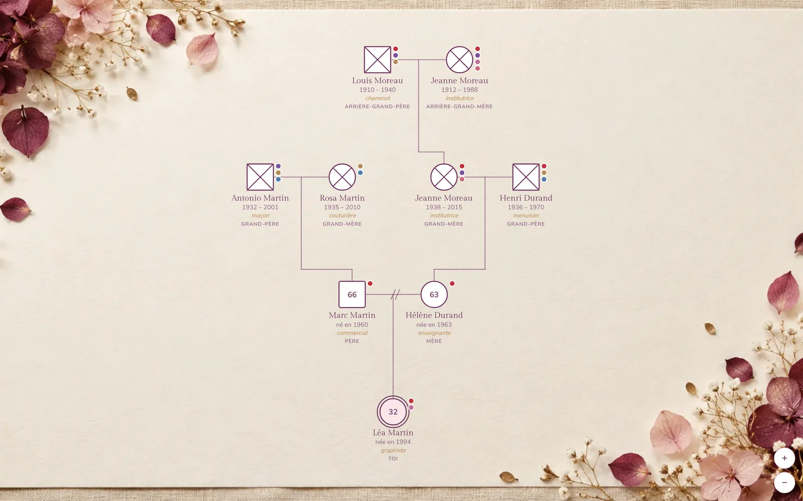
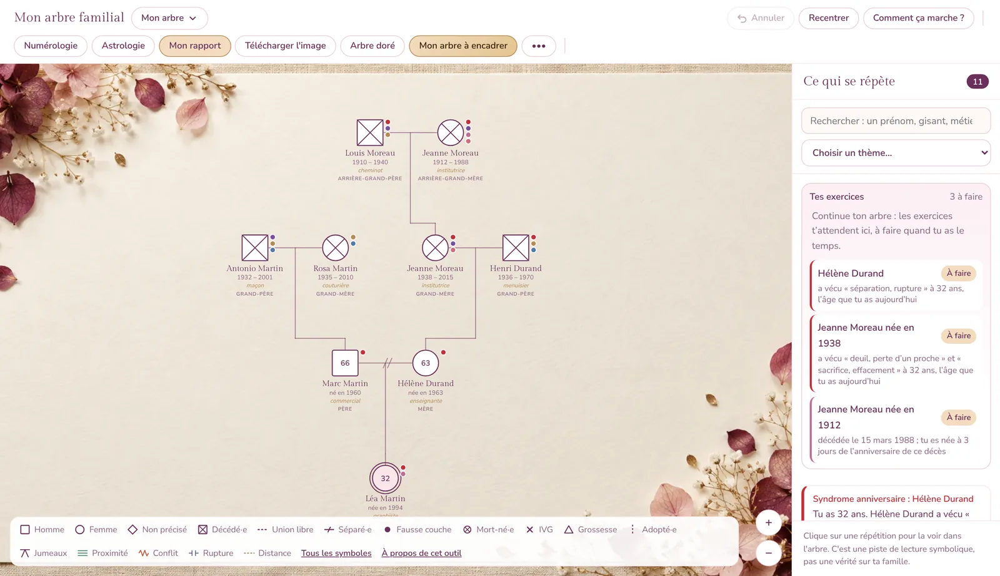
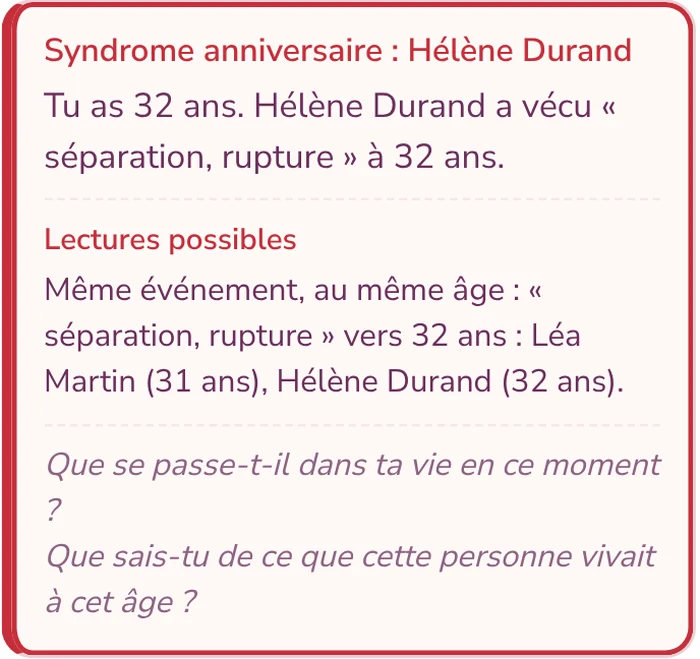
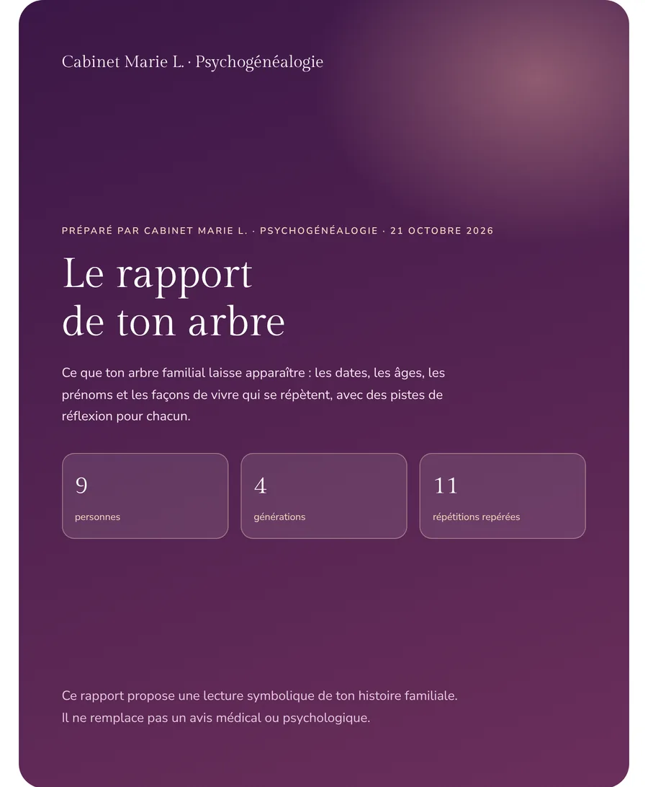
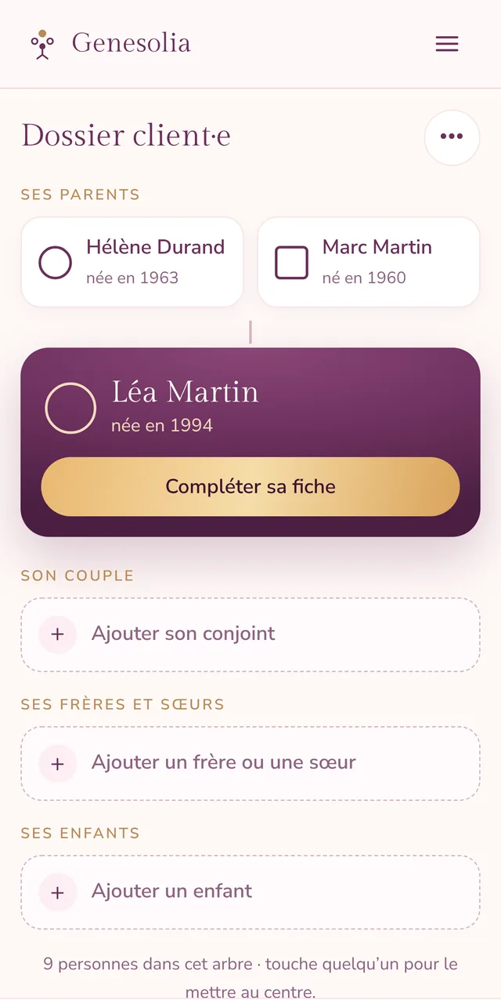
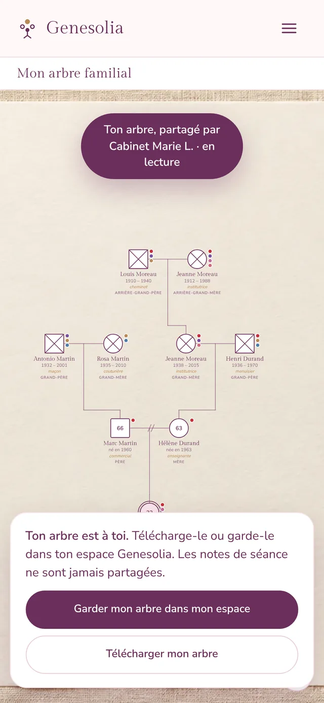

Espace praticien · tarif fondateur jusqu’au 31 mars
Le génosociogramme de tes client·es, prêt en quelques minutes
Un cabinet en ligne pour les professionnel·les de l’accompagnement : un dossier par client·e, l’arbre en plein écran pendant la séance, les répétitions qui ressortent toutes seules, et l’arbre remis à la fin du travail.
Sans carte bancaire. Cabinet ouvert jusqu’au 31 mars 2027 : 19 € par mois (ou 190 € l’année) au lieu de 24 €, garanti tant que ton abonnement continue. Conditions de l’Espace praticien.

L’outil, tel qu’il est
Ce que tu verras en ouvrant ton cabinet
Ces images viennent de l’outil, avec une famille fictive.


Zoom sur une répétitionCe qui se répète
Les répétitions ressortent pendant la saisie
Dates anniversaires, âges, prénoms qui reviennent, places dans la fratrie, deuils, métiers : plus de 25 pistes sont repérées automatiquement. Un clic sur une répétition la trace dans l’arbre, avec les lectures possibles et des questions pour en parler en séance.
Tu gagnes le temps du repérage, et tu gardes le tien pour l’écoute.

Le rapport
Un rapport PDF au nom de ton cabinet
L’arbre, les chiffres clés, chaque répétition expliquée avec ses pistes de réflexion, la lignée en nombres et en étoiles si ta pratique les utilise. La couverture porte le nom de ton cabinet.
Tu peux y ajouter tes notes de séance en annexe, si tu le choisis.


Sur téléphone, et pour tes client·es
L’arbre suit tes client·es, jusque dans leur espace
Sur téléphone, l’arbre se lit d’un coup d’œil : la personne au centre, sa famille autour, une case à toucher pour ajouter quelqu’un.
Entre deux séances, tes client·es regardent leur arbre par un lien. Quand le travail est terminé, l’arbre se télécharge ou se garde dans leur espace Genesolia.
Comment ça marche
Du premier rendez-vous à l’arbre remis
- 1Ouvre ton cabinetTon nom de cabinet, et c’est parti : 30 jours pour l’utiliser avec tes vrai·es client·es. Un dossier exemple, avec une famille fictive, s’ouvre en un clic pour tout essayer.
- 2Crée un dossier par client·eUn prénom ou des initiales suffisent. Tu dessines l’arbre en séance, ou tu importes un fichier Geneanet ou GEDCOM.
- 3Travaille l’arbre ensembleLe mode séance affiche l’arbre en plein écran. Les répétitions ressortent, et tu notes ce que tu observes, séance après séance.
- 4Partage, puis remets l’arbreUn lien en lecture pendant le suivi. Quand le travail est terminé, tu coches une case : tes client·es repartent avec leur arbre.
Le lien de partage, en deux temps
Tu crées un lien depuis le dossier et tu l’envoies. C’est toi qui décides de ce que tes client·es peuvent en faire.
Pendant le suivi
Tes client·es regardent leur arbre
- Le lien ouvre l’arbre en lecture seule : on le voit, on le parcourt, on le montre à sa famille.
- Pas de téléchargement ni d’impression : l’arbre reste dans ton cabinet.
- Tu continues à le compléter en séance : le lien montre toujours la dernière version.
Travail terminé
Tes client·es repartent avec leur arbre
- Dans le dossier, tu coches « Travail terminé ».
- Sur le lien, deux boutons apparaissent : télécharger l’arbre (image ou PDF) et le garder dans son espace Genesolia, gratuit.
- L’arbre gardé leur appartient, et se complète sans passer par toi.
Dans les deux cas, tes notes de séance ne sont jamais visibles ni copiées. Un lien reste valable 14 jours, se renouvelle en un clic depuis le dossier et se désactive à tout moment. Tu choisis aussi ce qu’il montre : l’arbre seul, ou avec les répétitions, sans les pistes délicates si tu préfères. Tu peux décocher « Travail terminé » à tout moment : ce qui a déjà été gardé reste chez tes client·es.
Pourquoi pas autre chose ?
Ce que les autres façons de faire ne font pas
| Ce dont tu as besoin | Papier et crayon | Logiciel de dessin | Logiciel de généalogie | Genesolia |
|---|---|---|---|---|
| Dessiner le génosociogramme | Long | À la main | Arbre classique | Oui, symboles compris |
| Repérer les répétitions (dates, âges, prénoms, fratrie) | Non | Non | Rarement | Automatique |
| Questions à explorer en séance | Non | Non | Non | Pour chaque piste |
| Un dossier rangé par client·e | Classeur | Fichiers | En partie | Oui, illimité |
| Notes de séance privées | Carnet | Non | Non | Chiffrées |
| Rapport au nom de ton cabinet | Non | Non | Non | En PDF |
| Remettre l’arbre à tes client·es | Une photocopie | Une image | Non | Lien, PDF, ou leur propre espace |
| En français, pensé pour la psychogénéalogie | Oui | Non | Non | Oui |
Tout est inclus
Ce que tu as dans ton cabinet
- InclusDossiers client·es illimitésUn arbre par client·e, rangé à part de tes arbres personnels, retrouvé en un clic.
- InclusNotes de séance chiffréesTes observations par séance, chiffrées avant d’être enregistrées, exportables en PDF au nom de ton cabinet.
- InclusMode séanceL’arbre en plein écran, sans menus, pour le regarder à deux.
- InclusLien de partageTes client·es voient leur arbre entre deux séances, sans tes notes. Il se renouvelle en un clic.
- InclusL’arbre remis à la finQuand tu le décides, tes client·es le téléchargent ou le gardent dans leur espace gratuit. Tes notes restent à toi.
- InclusRapport au nom de ton cabinetLe rapport de l’arbre en PDF, « préparé par » ton cabinet, avec tes notes en annexe si tu le choisis.
- InclusPlus de 25 pistes repéréesÂges, dates, prénoms, places dans la fratrie, deuils : repérés automatiquement, avec des questions guidées.
- InclusTes propres repères, en couleurPose tes mots sur les personnes (« s’efface », « porte la famille »…). Quand un mot revient d’une génération à l’autre, l’arbre le montre.
- InclusImport Geneanet et GEDCOMPas besoin de tout ressaisir. Numérologie et astrologie reliées à l’arbre, si ta pratique les utilise.
Bientôt
L’annuaire des praticien·nes Genesolia
Des particuliers dessinent leur arbre sur Genesolia, puis cherchent quelqu’un pour les accompagner. L’annuaire leur présentera les cabinets abonnés, près de chez soi ou en visio. Les cabinets ouverts d’ici le 31 mars 2027 y seront présentés en premier.
Arrivent aussi : ton logo et tes couleurs sur le rapport, et un avantage sur Le Cercle à offrir à tes client·es.
Tarif
Un abonnement simple
24 €par mois, sans engagementou 240 € l’année (2 mois offerts)
- 30 jours d’essai, sans carte, avec tes vrai·es client·es
- Tarif fondateur : 19 € par mois si tu ouvres ton cabinet d’ici le 31 mars 2027, garanti tant que ton abonnement continue
- Autant de dossiers que tu veux, avec leurs rapports et leurs exports au nom de ton cabinet
- Après l’essai sans abonnement, tes dossiers restent consultables
Moins d’un tiers de séance par mois. L’outil gratuit reste réservé à un usage personnel : avec des client·es, c’est l’Espace praticien.
Confidentialité
Les données de tes client·es, protégées
Tu travailles avec des histoires familiales. Elles méritent un cadre clair.
- Hébergement en Europe : les données sont stockées sur des serveurs situés en Irlande.
- Notes chiffrées : tes notes de séance sont chiffrées avant d’être enregistrées. Elles ne sont jamais montrées dans le lien de partage, ni copiées dans l’espace de tes client·es.
- L’arbre remis seulement si tu le décides : tant que tu n’as pas coché « Travail terminé », le lien reste en lecture seule.
- Pas de données de santé : l’Espace praticien est un outil de psychogénéalogie et d’accompagnement. Il n’est pas fait pour noter des informations médicales.
- Suppression à la demande : un dossier et ses notes se suppriment en un clic, dès que ton·ta client·e le demande.
Tu animes une formation en psychogénéalogie ?
Tes élèves travaillent sur leur propre génosociogramme : Genesolia leur fait gagner le dessin et le repérage. Écris-nous pour un accès dédié à ta promotion.
Écrire à GenesoliaQuestions fréquentes
Genesolia remplace-t-il un accompagnement ?
Non. Genesolia est un outil de travail et une grille de lecture symbolique de l’histoire familiale. Il t’aide à dessiner et à explorer un génosociogramme avec tes client·es, mais ne pose aucun diagnostic et ne remplace pas un avis médical ou psychologique. L’accompagnement reste le tien.
Comment fonctionne le tarif fondateur ?
Si tu ouvres ton cabinet d’ici le 31 mars 2027, tu paieras 19 € par mois (ou 190 € l’année) au lieu de 24 € quand tu passeras à l’abonnement, et ce prix reste le tien tant que ton abonnement continue. Il n’y a rien d’autre à remplir : l’ouverture du cabinet suffit.
Est-ce que mes client·es voient mes notes ?
Jamais. Le lien de partage montre l’arbre sans tes notes ni tes repères. Quand tu remets l’arbre, seules les personnes et leurs liens sont copiés. Si l’on te demande ce que tu as noté, tu peux exporter tes notes en PDF.
Comment se passe la remise de l’arbre ?
Quand le travail est terminé, tu coches « Travail terminé » dans le dossier et tu envoies le lien de partage. Sur ce lien, l’arbre peut alors être téléchargé en image ou en PDF, ou gardé dans un espace Genesolia personnel et gratuit. Tu peux décocher à tout moment : ce qui a déjà été gardé reste dans l’espace où il a été copié.
Faut-il un compte à mes client·es ?
Non pour regarder leur arbre : le lien suffit. Oui, gratuit, seulement pour le garder dans leur espace à la fin.
Que se passe-t-il à la fin de l’essai ?
Tes dossiers restent consultables. Pour créer de nouveaux dossiers et de nouveaux liens de partage, il faut l’abonnement.
Où sont hébergées les données de mes client·es ?
En Europe (Irlande). Les notes de séance sont chiffrées avant d’être enregistrées, et un dossier se supprime en un clic à la demande de ton·ta client·e.